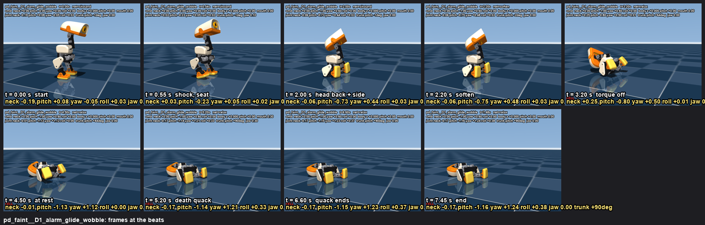
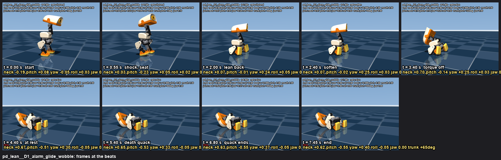
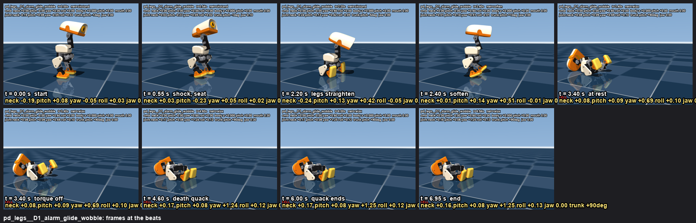

Combination emotion: sit_toggle + a head program + robot.soften. The duck is driven only through what the real robot accepts (sit skill, head deltas, body pose, soften). Simulation, side camera, 640x480, 30 fps. The beak follows the wav for the shock; on the death quack it opens to 0.3 at most. After the torque cut the head cannot move any more, so the head goes to its side BEFORE the soften and stays there (the brief's 'then the head straightens' is not achievable without torque, see REPORT.md). Files: /Users/remi/microduck/notes/emotions/motion/playdead/ (spec.json, playdead.py, probe.py, REPORT.md), sounds in sounds/playdead/.
Every recipe: sit at t = 0 (the seat lands by ~1 s). "soften" = robot.soften (gain 50 at once, to 0 over 1 s, torque off). The sit itself peaks at 2.2 rad/s of trunk rotation and 0.55 m/s of head speed, so those are the floor. ON BACK = the trunk's back on the floor.
| recipe | ends | leaves upright (s) | at rest (s) | peak trunk rot (rad/s) | peak head speed (m/s) | head z min (m) |
|---|---|---|---|---|---|---|
| 1_sit_hold1_soften | upright | None | 2.5 | 2.2 | 0.59 | 0.048 |
| 1b_sit_hold2_soften | upright | None | 3.48 | 2.2 | 0.56 | 0.054 |
| 2_sit_headback_yaw_soften | ON BACK | 2.98 | 4.28 | 6.61 | 0.82 | 0.029 |
| 3_sit_rise0.2_soften | upright | 2.68 | 4.54 | 4.59 | 0.75 | 0.088 |
| 3_sit_rise0.4_soften | ON BACK | 2.9 | 3.12 | 9.08 | 1.39 | 0.028 |
| 3_sit_rise0.6_soften | ON BACK | 2.94 | 3.18 | 10.85 | 1.45 | 0.023 |
| 3_sit_rise0.8_soften | ON BACK | 3.0 | 3.18 | 9.18 | 1.45 | 0.028 |
| 3_sit_rise1.2_soften | upright | None | 4.46 | 3.84 | 0.66 | 0.056 |
| 4_sit_pose-0.2_soften | ON BACK | 3.78 | 4.02 | 5.69 | 0.57 | 0.031 |
| 4_sit_pose-0.3_soften | ON BACK | 3.94 | 4.18 | 6.27 | 0.55 | 0.031 |
| 5_sit_relax | upright | None | 3.96 | 2.2 | 0.55 | 0.067 |
| 6_crouch_headback_soften | face down | 2.0 | 2.96 | 6.82 | 1.28 | 0.048 |
| 7_headback_backstep_soften | face down | 1.62 | 2.18 | 8.0 | 1.26 | 0.052 |
Verdict: the sit-stand RISE cut short (3_) always lands on the back but hardest (9-11 rad/s, head 1.4 m/s); the head thrown back + soften (2_) lands on the back at 6.6 rad/s / 0.82 m/s (the head goes first); the seated body-pose lean + soften (4_) is the softest (5.7-6.3 rad/s, the head no faster than the sit itself) but relies on the net's neck trade-off leaving the duck on the edge of balance once the torque is gone; plain sit + soften/relax (1_, 5_) just slumps in the seat.
shock (head up, sit at once), the head goes back and to the side over 1 s, soften at 2.2 s: the duck keels over backwards on its own weight as the torque dies (tips ~3.2 s, still by ~4.5 s), death quack at 4.8 s, beak barely open
motion: shock (head up, sit at once), the head goes back and to the side over 1 s, soften at 2.2 s: the duck keels over backwards on its own weight as the torque dies (tips ~3.2 s, still by ~4.5 s), death quack at 4.8 s, beak barely open
beats: 0.55 s shock, seat · 2.00 s head back + side · 2.20 s soften · 3.20 s torque off · 4.50 s at rest · 5.20 s death quack · 6.60 s quack ends
sound: the bank's alarm scream at the press, silence, then a synth death quack 260 -> 120 Hz with a 5 Hz wobble that slows and dies (-6 dB)
measured: FELL at 3.14 s · trunk drift 14.2 cm · trunk pitch -6..+90 deg · joints: neck -0.19, head_pitch -1.16..+0.08, |yaw| 1.24, |roll| 0.38 rad · jaw at the quacks [1.0, 0.3], between 0.3 · nets sitstand > soften > relax
beats sheet · keyframes json (with mouth) · silent mp4

motion: shock (head up, sit at once), the head goes back and to the side over 1 s, soften at 2.2 s: the duck keels over backwards on its own weight as the torque dies (tips ~3.2 s, still by ~4.5 s), death quack at 4.8 s, beak barely open
beats: 0.55 s shock, seat · 2.00 s head back + side · 2.20 s soften · 3.20 s torque off · 4.50 s at rest · 5.20 s death quack · 6.60 s quack ends
sound: the bank's inquire shock (as devastated), silence, then the robot's coo voice falling 230 -> 110 Hz with a dying wobble: a breathy last sigh
measured: FELL at 3.14 s · trunk drift 14.3 cm · trunk pitch -5..+90 deg · joints: neck -0.20, head_pitch -1.21..+0.09, |yaw| 1.22, |roll| 0.35 rad · jaw at the quacks [1.0, 0.3], between 0.89 · nets sitstand > soften > relax
motion: shock (head up, sit at once), the head goes back and to the side over 1 s, soften at 2.2 s: the duck keels over backwards on its own weight as the torque dies (tips ~3.2 s, still by ~4.5 s), death quack at 4.8 s, beak barely open
beats: 0.55 s shock, seat · 2.00 s head back + side · 2.20 s soften · 3.20 s torque off · 4.50 s at rest · 5.20 s death quack · 6.60 s quack ends
sound: alarm at the press, silence, then the bank's wheee loop backwards on a slowing tape: a real-timbre fall that dies
measured: FELL at 3.14 s · trunk drift 14.2 cm · trunk pitch -6..+90 deg · joints: neck -0.19, head_pitch -1.16..+0.08, |yaw| 1.24, |roll| 0.38 rad · jaw at the quacks [1.0, 0.3], between 0.3 · nets sitstand > soften > relax
same faint, slower: the head goes back over 1.5 s, soften at 2.8 s, more silence, death quack at 5.6 s
motion: same faint, slower: the head goes back over 1.5 s, soften at 2.8 s, more silence, death quack at 5.6 s
beats: 0.55 s shock, seat · 2.50 s head back + side · 2.80 s soften · 3.80 s torque off · 5.10 s at rest · 6.00 s death quack · 7.60 s quack ends
sound: the bank's alarm scream at the press, silence, then a synth death quack 260 -> 120 Hz with a 5 Hz wobble that slows and dies (-6 dB)
measured: FELL at 3.76 s · trunk drift 14.3 cm · trunk pitch -6..+90 deg · joints: neck -0.20, head_pitch -1.23..+0.08, |yaw| 1.25, |roll| 0.37 rad · jaw at the quacks [1.0, 0.3], between 0.3 · nets sitstand > soften > relax
motion: same faint, slower: the head goes back over 1.5 s, soften at 2.8 s, more silence, death quack at 5.6 s
beats: 0.55 s shock, seat · 2.50 s head back + side · 2.80 s soften · 3.80 s torque off · 5.10 s at rest · 6.00 s death quack · 7.60 s quack ends
sound: the bank's inquire shock (as devastated), silence, then the robot's coo voice falling 230 -> 110 Hz with a dying wobble: a breathy last sigh
measured: FELL at 3.76 s · trunk drift 14.3 cm · trunk pitch -5..+90 deg · joints: neck -0.20, head_pitch -1.21..+0.09, |yaw| 1.25, |roll| 0.38 rad · jaw at the quacks [1.0, 0.3], between 0.89 · nets sitstand > soften > relax
shock + sit, a body-pose lean back (-0.3, seated: the net moves the neck back) with the head to the side, soften at 2.4 s; the duck tips over ~1.3 s after the torque is gone (probe: the softest fall, but a marginal balance)
motion: shock + sit, a body-pose lean back (-0.3, seated: the net moves the neck back) with the head to the side, soften at 2.4 s; the duck tips over ~1.3 s after the torque is gone (probe: the softest fall, but a marginal balance)
beats: 0.55 s shock, seat · 2.00 s lean back · 2.40 s soften · 3.40 s torque off · 4.40 s at rest · 5.40 s death quack · 6.80 s quack ends
sound: the bank's alarm scream at the press, silence, then a synth death quack 260 -> 120 Hz with a 5 Hz wobble that slows and dies (-6 dB)
measured: FELL at 3.56 s · trunk drift 12.7 cm · trunk pitch -6..+69 deg · joints: neck -0.19, head_pitch -0.55..+0.08, |yaw| 0.40, |roll| 0.07 rad · jaw at the quacks [1.0, 0.3], between 0.3 · nets sitstand > soften > relax
beats sheet · keyframes json (with mouth) · silent mp4

shock + sit, head to the side, then the sit-stand RISE for 0.4 s (the legs straighten) and soften: the duck goes over backwards from its heels (the brief's idea; the fastest fall in the probe)
motion: shock + sit, head to the side, then the sit-stand RISE for 0.4 s (the legs straighten) and soften: the duck goes over backwards from its heels (the brief's idea; the fastest fall in the probe)
beats: 0.55 s shock, seat · 2.20 s legs straighten · 2.40 s soften · 3.40 s torque off · 3.40 s at rest · 4.60 s death quack · 6.00 s quack ends
sound: the bank's alarm scream at the press, silence, then a synth death quack 260 -> 120 Hz with a 5 Hz wobble that slows and dies (-6 dB)
measured: FELL at 2.80 s · trunk drift 18.2 cm · trunk pitch -6..+99 deg · joints: neck -0.25, head_pitch -0.35..+0.29, |yaw| 1.25, |roll| 0.13 rad · jaw at the quacks [1.0, 0.3], between 0.3 · nets sitstand > soften > relax
beats sheet · keyframes json (with mouth) · silent mp4

{kind=link}
{kind=link}
{kind=link}
{kind=link}
{kind=link}
{kind=link}
{kind=link}